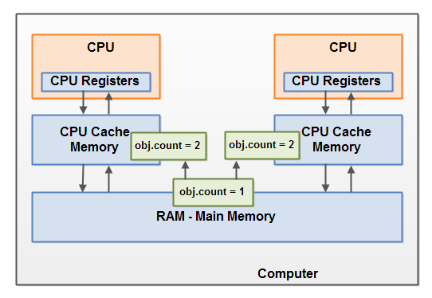

- Java Concurrency / Multithreading Tutorial
- Multithreading Benefits
- Multithreading Costs
- Concurrency Models
- Same-threading
- Concurrency vs. Parallelism
- Creating and Starting Java Threads
- Race Conditions and Critical Sections
- Thread Safety and Shared Resources
- Thread Safety and Immutability
- Java Memory Model
- Java Synchronized Blocks
- Java Volatile Keyword
- Java ThreadLocal
- Thread Signaling
- Deadlock
- Deadlock Prevention
- Starvation and Fairness
- Nested Monitor Lockout
- Slipped Conditions
- Locks in Java
- Read / Write Locks in Java
- Reentrance Lockout
- Semaphores
- Blocking Queues
- Thread Pools
- Compare and Swap
- Anatomy of a Synchronizer
- Non-blocking Algorithms
- Amdahl's Law
- Java Concurrency References
Java Memory Model
Jakob Jenkov |
The Java memory model specifies how the Java virtual machine works with the computer's memory (RAM). The Java virtual machine is a model of a whole computer so this model naturally includes a memory model - AKA the Java memory model.
It is very important to understand the Java memory model if you want to design correctly behaving concurrent programs. The Java memory model specifies how and when different threads can see values written to shared variables by other threads, and how to synchronize access to shared variables when necessary.
The original Java memory model was insufficient, so the Java memory model was revised in Java 1.5. This version of the Java memory model is still in use in Java 8.
The Internal Java Memory Model
The Java memory model used internally in the JVM divides memory between thread stacks and the heap. This diagram illustrates the Java memory model from a logic perspective:

Each thread running in the Java virtual machine has its own thread stack. The thread stack contains information about what methods the thread has called to reach the current point of execution. I will refer to this as the "call stack". As the thread executes its code, the call stack changes.
The thread stack also contains all local variables for each method being executed (all methods on the call stack). A thread can only access it's own thread stack. Local variables created by a thread are invisible to all other threads than the thread who created it. Even if two threads are executing the exact same code, the two threads will still create the local variables of that code in each their own thread stack. Thus, each thread has its own version of each local variable.
All local variables of primitive types (
boolean, byte, short, char, int, long,
float, double) are fully stored on the thread stack and are thus
not visible to other threads. One thread may pass a copy of a pritimive variable to another thread, but it cannot
share the primitive local variable itself.
The heap contains all objects created in your Java application, regardless of what thread created the object.
This includes the object versions of the primitive types (e.g. Byte, Integer, Long etc.).
It does not matter if an object was created and assigned to a local variable, or created as a member variable of
another object, the object is still stored on the heap.
Here is a diagram illustrating the call stack and local variables stored on the thread stacks, and objects stored on the heap:

A local variable may be of a primitive type, in which case it is totally kept on the thread stack.
A local variable may also be a reference to an object. In that case the reference (the local variable) is stored on the thread stack, but the object itself if stored on the heap.
An object may contain methods and these methods may contain local variables. These local variables are also stored on the thread stack, even if the object the method belongs to is stored on the heap.
An object's member variables are stored on the heap along with the object itself. That is true both when the member variable is of a primitive type, and if it is a reference to an object.
Static class variables are also stored on the heap along with the class definition.
Objects on the heap can be accessed by all threads that have a reference to the object. When a thread has access to an object, it can also get access to that object's member variables. If two threads call a method on the same object at the same time, they will both have access to the object's member variables, but each thread will have its own copy of the local variables.
Here is a diagram illustrating the points above:

Two threads have a set of local variables. One of the
local variables (Local Variable 2) point to a shared object on the heap (Object 3). The two threads
each have a different reference to the same object. Their references are local variables and are thus stored in
each thread's thread stack (on each). The two different references point to the same object on the heap, though.
Notice how the shared object (Object 3) has a reference to Object 2 and Object 4 as member variables (illustrated by the arrows from Object 3 to Object 2 and Object 4). Via these member variable references in Object 3 the two threads can access Object 2 and Object 4.
The diagram also shows a local variable which point to two different objects on the heap. In this case the references point to two different objects (Object 1 and Object 5), not the same object. In theory both threads could access both Object 1 and Object 5, if both threads had references to both objects. But in the diagram above each thread only has a reference to one of the two objects.
So, what kind of Java code could lead to the above memory graph? Well, code as simple as the code below:
public class MyRunnable implements Runnable() {
public void run() {
methodOne();
}
public void methodOne() {
int localVariable1 = 45;
MySharedObject localVariable2 =
MySharedObject.sharedInstance;
//... do more with local variables.
methodTwo();
}
public void methodTwo() {
Integer localVariable1 = new Integer(99);
//... do more with local variable.
}
}
public class MySharedObject {
//static variable pointing to instance of MySharedObject
public static final MySharedObject sharedInstance =
new MySharedObject();
//member variables pointing to two objects on the heap
public Integer object2 = new Integer(22);
public Integer object4 = new Integer(44);
public long member1 = 12345;
public long member1 = 67890;
}
If two threads were executing the run() method then the diagram shown earlier would be the outcome.
The run() method calls methodOne() and methodOne() calls methodTwo().
methodOne() declares a primitive local variable (localVariable1
of type int) and an local variable which is an object reference (localVariable2).
Each thread executing methodOne() will create its own copy of localVariable1 and
localVariable2 on their respective thread stacks. The localVariable1 variables will be
completely separated from each other, only living on each thread's thread stack. One thread cannot see what
changes another thread makes to its copy of localVariable1.
Each thread executing methodOne() will also create their own copy of localVariable2.
However, the two different copies of localVariable2 both end up pointing to the same object on the heap.
The code sets localVariable2 to point to an object referenced by a static variable. There is only one
copy of a static variable and this copy is stored on the heap. Thus, both of the two copies of localVariable2
end up pointing to the same instance of MySharedObject which the static variable points to. The MySharedObject instance is
also stored on the heap. It corresponds to Object 3 in the diagram above.
Notice how the MySharedObject class contains two member variables too. The member variables themselves
are stored on the heap along with the object. The two member variables point to two other Integer
objects. These Integer objects correspond to Object 2 and Object 4 in the diagram above.
Notice also how methodTwo() creates a local variable named localVariable1. This local
variable is an object reference to an Integer object. The method sets the localVariable1
reference to point to a new Integer instance. The localVariable1 reference will be stored
in one copy per thread executing methodTwo(). The two Integer objects instantiated will
be stored on the heap, but since the method creates a new Integer object every time the method is executed,
two threads executing this method will create separate Integer instances. The Integer
objects created inside methodTwo() correspond to Object 1 and Object 5 in the diagram above.
Notice also the two member variables in the class MySharedObject of type long which
is a primitive type. Since these variables are member variables, they are still stored on the heap along with
the object. Only local variables are stored on the thread stack.
Hardware Memory Architecture
Modern hardware memory architecture is somewhat different from the internal Java memory model. It is important to understand the hardware memory architecture too, to understand how the Java memory model works with it. This section describes the common hardware memory architecture, and a later section will describe how the Java memory model works with it.
Here is a simplified diagram of modern computer hardware architecture:

A modern computer often has 2 or more CPUs in it. Some of these CPUs may have multiple cores too. The point is, that on a modern computer with 2 or more CPUs it is possible to have more than one thread running simultaneously. Each CPU is capable of running one thread at any given time. That means that if your Java application is multithreaded, one thread per CPU may be running simultaneously (concurrently) inside your Java application.
Each CPU contains a set of registers which are essentially in-CPU memory. The CPU can perform operations much faster on these registers than it can perform on variables in main memory. That is because the CPU can access these registers much faster than it can access main memory.
Each CPU may also have a CPU cache memory layer. In fact, most modern CPUs have a cache memory layer of some size. The CPU can access its cache memory much faster than main memory, but typically not as fast as it can access its internal registers. So, the CPU cache memory is somewhere in between the speed of the internal registers and main memory. Some CPUs may have multiple cache layers (Level 1 and Level 2), but this is not so important to know to understand how the Java memory model interacts with memory. What matters is to know that CPUs can have a cache memory layer of some sort.
A computer also contains a main memory area (RAM). All CPUs can access the main memory. The main memory area is typically much bigger than the cache memories of the CPUs.
Typically, when a CPU needs to access main memory it will read part of main memory into its CPU cache. It may even read part of the cache into its internal registers and then perform operations on it. When the CPU needs to write the result back to main memory it will flush the value from its internal register to the cache memory, and at some point flush the value back to main memory.
The values stored in the cache memory is typically flushed back to main memory when the CPU needs to store something else in the cache memory. The CPU cache can have data written to part of its memory at a time, and flush part of its memory at a time. It does not have to read / write the full cache each time it is updated. Typically the cache is updated in smaller memory blocks called "cache lines". One or more cache lines may be read into the cache memory, and one or mor cache lines may be flushed back to main memory again.
Bridging The Gap Between The Java Memory Model And The Hardware Memory Architecture
As already mentioned, the Java memory model and the hardware memory architecture are different. The hardware memory architecture does not distinguish between thread stacks and heap. On the hardware, both the thread stack and the heap are located in main memory. Parts of the thread stacks and heap may sometimes be present in CPU caches and in internal CPU registers. This is illustrated in this diagram:

When objects and variables can be stored in various different memory areas in the computer, certain problems may occur. The two main problems are:
- Visibility of thread updates (writes) to shared variables.
- Race conditions when reading, checking and writing shared variables.
Both of these problems will be explained in the following sections.
Visibility of Shared Objects
If two or more threads are sharing an object, without the proper use of either volatile declarations
or synchronization, updates to the shared object made by one thread may not be visible to other threads.
Imagine that the shared object is initially stored in main memory. A thread running on CPU one then reads the shared object into its CPU cache. There it makes a change to the shared object. As long as the CPU cache has not been flushed back to main memory, the changed version of the shared object is not visible to threads running on other CPUs. This way each thread may end up with its own copy of the shared object, each copy sitting in a different CPU cache.
The following diagram illustrates the sketched situation. One thread running on the left CPU copies the shared
object into its CPU cache, and changes its count variable to 2. This change is not visible to
other threads running on the right CPU, because the update to count has not been flushed back
to main memory yet.

To solve this problem you can use Java's volatile keyword. The volatile
keyword can make sure that a given variable is read directly from main memory, and always written back to main memory
when updated.
Race Conditions
If two or more threads share an object, and more than one thread updates variables in that shared object, race conditions may occur.
Imagine if thread A reads the variable count of a shared object into its CPU cache. Imagine too,
that thread B does the same, but into a different CPU cache. Now thread A adds one to count, and
thread B does the same. Now var1 has been incremented two times, once in each CPU cache.
If these increments had been carried out sequentially, the variable count would be been incremented twice
and had the original value + 2 written back to main memory.
However, the two increments have been carried out concurrently without proper synchronization. Regardless of
which of thread A and B that writes its updated version of count back to main memory, the updated value
will only be 1 higher than the original value, despite the two increments.
This diagram illustrates an occurrence of the problem with race conditions as described above:
To solve this problem you can use a Java synchronized block. A synchronized block guarantees that only one thread can enter a given critical section of the code at any given time. Synchronized blocks also guarantee that all variables accessed inside the synchronized block will be read in from main memory, and when the thread exits the synchronized block, all updated variables will be flushed back to main memory again, regardless of whether the variable is declared volatile or not.
| Tweet | |
Jakob Jenkov | |